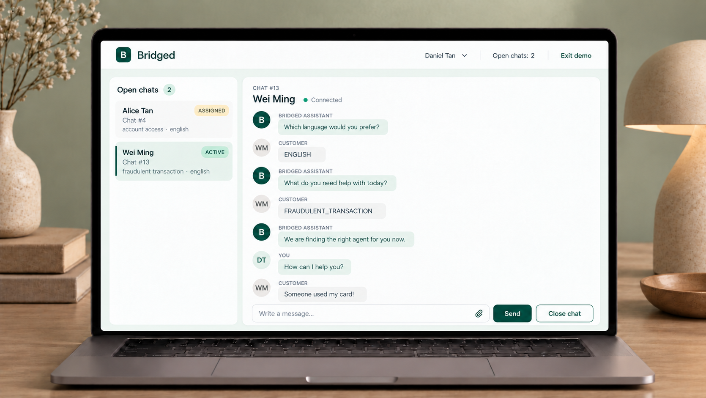

Match the need
Only agents with the required language and topic proficiency should be considered.
BRIDGED APPLICATION
Designing and engineering a full-stack platform that guides customers through triage, assigns suitable agents and supports live conversations.

OVERVIEW
Bridged is a full-stack, real-time customer-support chat platform. Customers complete a short triage process before entering a PostgreSQL-backed queue. The system then assigns an eligible agent, who can accept the chat and communicate with the customer in real time.
I designed and built the application from concept to deployment. The project brings together product thinking, user-flow design, backend architecture, frontend development, data modelling, real-time communication and cloud infrastructure.
PRODUCT DEMO
The demo follows a customer through language and topic triage, automatic agent assignment and a live conversation, then shows how the application stores and updates the underlying data.
THE PRODUCT CHALLENGE
A useful routing experience has to balance several needs at once: understand the customer’s request, find an agent with the right language and skill, respect agents’ availability and capacity, distribute workload fairly, and respond appropriately to priority requests.
Only agents with the required language and topic proficiency should be considered.
The most proficient eligible agent should not automatically receive every conversation.
Higher-priority chats need earlier target assignment times without creating a rigid queue.
Concurrent assignment attempts must not select the same chat or over-allocate an agent.
CUSTOMER JOURNEY
I mapped the end-to-end journey before implementation so that product behaviour, system states and technical responsibilities followed the same flow.
The customer starts a new support conversation.
A language triage step captures the communication requirement.
The support topic determines the skill needed from an agent.
The chat is persisted with its priority and assignment deadline.
An eligible agent is selected and accepts the conversation.
Customer, agent and bot messages are stored and delivered live.
The conversation ends and the agent’s available capacity is restored.
PRODUCT DECISIONS
Customers answer one question at a time: which language they need and what their enquiry is about. The system stores these as two distinct criteria, allowing it to match agents by both language proficiency and topic skill.
The system first filters agents by language, skill, availability and remaining capacity, then ranks only those who are eligible.
Ranking only by proficiency would repeatedly favour the most skilled agents. Open-chat count is considered first, followed by proficiency.
I replaced a fixed weighted-priority approach with target assignment times, allowing the most urgent deadline to be considered first.
ARCHITECTURE & IMPLEMENTATION
I chose a modular monolith: one deployable Spring Boot application organised into distinct modules for customer triage, assignment, chat lifecycle and messaging. This kept the MVP simpler to develop, test and deploy while maintaining clear boundaries between responsibilities.
I first built the backend, including the data model, REST APIs, assignment logic and real-time messaging. I then used AI coding tools to build the React frontend around these existing APIs and customer-agent flows.
ASSIGNMENT LOGIC
TECHNICAL CHALLENGES
Spring Boot, WebSockets and AWS deployment were new to me. Building Bridged helped me understand how the frontend, API, database, real-time messaging and cloud infrastructure operate as one system.
The first algorithm ranked agents mainly by proficiency, which could repeatedly direct work to the most proficient agents. I introduced open-chat counts and maximum capacity, then ranked eligible agents by workload before proficiency. After researching how other support systems use service-level targets, I also applied a simplified approach in which each priority level receives a target assignment time and the most urgent deadline is considered first.
To prevent concurrent assignment attempts from selecting the same chat or exceeding an agent’s capacity, I wrapped the assignment process in a database transaction and used pessimistic row locking with PostgreSQL’s SKIP LOCKED. A locked chat is skipped temporarily rather than blocking the process, while the scheduled assignment job continues checking unassigned chats on subsequent runs so they remain visible and are considered again.
Local and RDS databases generated independent IDs, while Singapore and UTC server time caused messages to appear out of order. I aligned the MVP server timezone; a future version will use Instant or OffsetDateTime.
COMPLETED & PLANNED DEVELOPMENT
I translated the delivered system and planned improvements into epics, user stories and implementation tasks with acceptance criteria. The board makes the current product state visible: completed MVP capabilities sit alongside the work needed to make Bridged more secure, resilient and observable.

The live board may require Atlassian access.
REFLECTION
Bridged gave me hands-on experience across the complete software-development lifecycle and showed me that a reliable support experience depends on both the interface and the system behind it. Designing the assignment process meant considering not only how to select an eligible agent, but also how to retry, fall back or escalate when no agent is available, especially for priority chats. The broader lesson was to match technical decisions to demonstrated needs: the modular monolith and PostgreSQL-backed queue are appropriate for the MVP, while additional infrastructure such as a dedicated message queue should only be introduced when usage and performance data justify the added complexity.
NEXT PROJECT
Creating User Personas→